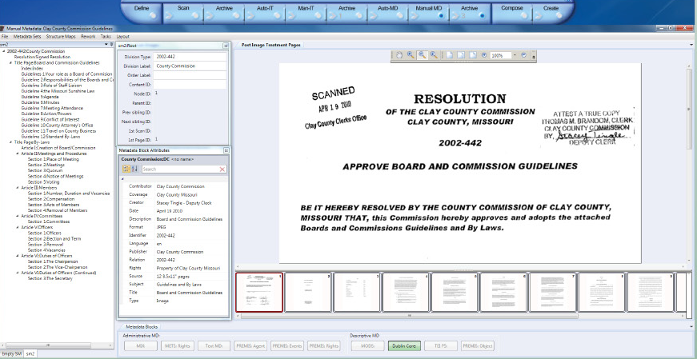
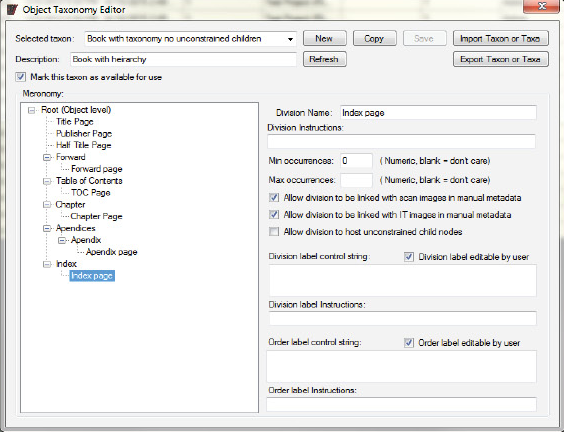

Opus support for the Open Archive Initiative (OAI) takes on several forms. Opus has the ability to generate export derivative sets which can be added into an OAI-compliant metadata repository and made available via the OAI-PMH to any OAI compliant metadata harvesters. The DLSG operates and manages the cloud infrastructure necessary to support this need, thus freeing our users from having to acquire and maintain the expertise to make their chosen objects available to the digital archive community at large. For example, this feature of Opus allows its users to easily contribute to the Digital Public Library Project (DPLA) with just a few clicks.
The underlying object resources (images) described in the OAI-compliant metadata export may either be hosted by the OPUS customers themselves or the resources can be uploaded to a DLSG-maintained archive repository as part of the OAI publishing process.
Published objects can be further queried and made available by Opus's support for the OAI-ORE project. In addition to the cloud based OAI publishing features, the DLSG cloud repository allows the user community of Opus Systems to share or exchange Opus objects among themselves.
Opus' hierarchical metadata capture is controlled by templates that can be created and modified to fit virtually any requirements. Input field characteristics include :required/optional, repeatable/one occurrence only and other characteristicsc that can be specified when templates are constructed of modified. Opus provides several generic templates to capture the data necessary to create virtual library output formats.
Opus provides a straightforward graphical interface for creating and modifying hierarchical templates. The templates carry the charasterics of XML elements and attributes. Data entry rules such as required/optional and single/multiple can be assigned to each field. During metadata capture and entry, Opus enforces the rules, thus simplifying metadata entry and reducing errors.
In addition, the Opus hierarchical metadata input facility allows users to scroll back and forth through the images of an object (e.g. pages of a book ) while reviewing and entering metadata.
One of the key benefits of the Opus Metadata capture system is its flexibility in allowing project curators to not only design and codify their own specialized metadata data capture needs, but to link these metadata collection sets to customized object meronomies. This degree of metadata capture task standardization affords the project's curator the confidence to know that their project's metadata needs will be meet by the data collection4 team.
Once these completed metadata collection templates have been defined , they can be shared back into curator's community, thus allowing the project to expand beyond a single institute. This ensures that the resultant aggregate of objects can be blended seamlessly together into a single master archive to be used by the project's curators to publish their collective work as part of a single repository.